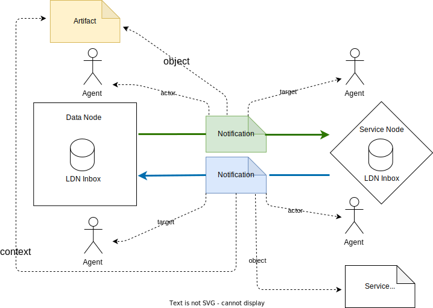

Feedback welcome: value-adding-networks@googlegroups.com.
1. Introduction

Figure 1: Overview of the network participants
This specification details a profile for using Linked Data Notifications [LDN] with ActivityStreams2 [AS2] payloads in value-adding networks.
A value-added network, as considered by this specification, is a network in which Web resources, for the purpose of this specification named Artifacts, are made available by nodes in the network, value is added to these Artifacts by other nodes in the network, and LDN+AS2 notifications with that regard are exchanged among network nodes.
The type of web resources that are considered Artifacts in a value-adding network depends on its community of use. For example, in a research communication value-adding network, Artifacts would include research outputs such as preprints, reviewed articles, datasets, workflows, and software that are part of the scholarly record.
A value-adding service applied to an Artifact does not change its content. Rather, the outcome of applying the service, for the purpose of this specification named Service Result, can be associated with the Artifact. It could, for example, be information that an Artifact was made discoverable by a portal; a trusted timestamp for an Artifact; information about a linkage the Artifact is involved in; the creation of a new resource related to the artifact (e.g. an enhanced version, a translation, an archival copy).
Regarding the exchange of these LDN+AS2 notifications, the specification distinguishes between two logical roles Data Node and Service Node:
-
A Data Node is a network node that makes Artifacts available to the network.
-
A Service Node is a network node that provides value-adding services for Artifacts that are available to the network.
In order to be able to communicate, each Data Node and Service Node has LDN Sender and LDN Receiver (LDN Inbox) capabilities that are used:
-
by a Data Node to send and receive LDN notifications pertaining to Artifacts that it makes available to the network, and,
-
by a Service Node to send and receive LDN notifications pertaining to value-adding services for Artifacts that are made available to the network.
Agents operate on behalf of Data Node and Service Node; they can be humans or machines, individuals or organizations. These Agents exchange LDN notifications, each of which pertains to an Artifact that is hosted by a Data Node.
The intended communication style among Nodes is point-to-point, requiring no centralized hubs. It is push-oriented, with only the relevant Nodes being updated about new information as it becomes available. Interactions among Nodes are necessarily asynchronous because certain notification patterns do not require a response and, in patterns that do, such as requesting a service for an Artifact, the time between a request and the announcement of the Service Result is unpredictable and could range between almost immediate to months.
The communication patterns are action-oriented. The patterns express when an activity was initiated, acknowledged, or yielded a result. Message payloads contain only core information (in most cases [URL] identifiers) to convey in which value-adding activities Data Nodes, Service Nodes, and Artifacts are involved and what the Service Results are. The assumption is that further information about the entities involved is available by using their identifiers in auto-discovery mechanisms. As such, message payloads are typically expressed by reference (i.e. by means of the [URL] of an entity) rather than by value (i.e. by means of a description of an entity).
A common scenario covered by the specification is depicted in Figure 1, which shows, on the dashed lines,
prefixed by AS, the AS2 element used in the LDN+AS2 payloads to convey the respective entity involved
in the value-adding network:
-
An Agent at the end of a Data Node uses an LDN Sender to send a notification to a Service Node's LDN Inbox (green arrow) requesting a value-adding service for an Artifact made available by the Data Node. The URL of the Artifact is provided in the AS2 object element of the notification.
-
An Agent at the end of the Service Node uses an LDN Consumer to obtain this request from the Service Node's LDN Inbox. Provided that the Service Node is willing and able to perform the requested service, it goes ahead and does so. The manner in which this is done is outside the scope of this specification.
-
Once the value-adding service is executed, an Agent at the end of the Service Node that is aware of the Service Result sends a notification (blue arrow) to the Data Node's LDN Inbox. The Service Result is provided in the AS2 object element of the notification. Moreover, the Artifact that the Service Result pertains to is provided in the AS2 context element of the notification.
-
An Agent at the end of the Data Node consumes this response by obtaining it from the Data Node's LDN Inbox, and acts upon the Service Result in a way deemed appropriate.
From the perspective of LDN:
-
An Artifact made available to the network by a Data Node is an LDN Target and therefore has a discoverable LDN Inbox. The LDN Inbox is used to receive LDN+AS2 notifications that provide the Data Node, acting as an LDN Consumer, with value-adding information pertaining to an Artifact.
-
A Service Node that provides value-adding services to Artifacts made available to the network is an LDN Target and therefore has a discoverable LDN Inbox. That LDN Inbox is used to receive LDN+AS2 notifications that provide the Service Node, acting as an LDN Consumer, either with information pertaining to an Artifact or with a request for the provision of a value-adding service for an Artifact.
From the perspective of AS2:
-
When an LDN+AS2 notification is sent from a Data Node, the Artifact to which the notification pertains is the AS2 object, the Agent that sends the notification is the AS2 actor, and the Agent to which the notification is addressed is the AS2 target.
-
When an LDN+AS2 notification is sent from a Service Node, the Service Result is the AS2 object, the Agent that sends the notification is the AS2 actor, and the Agent to which the notification is addressed is the AS2 target.
2. Conformance
Conformance requirements are expressed with a combination of descriptive assertions and RFC 2119 terminology. The key words “MUST”, “MUST NOT”, “REQUIRED”, “SHALL”, “SHALL NOT”, “SHOULD”, “SHOULD NOT”, “RECOMMENDED”, “MAY”, and “OPTIONAL” in the normative parts of this document are to be interpreted as described in RFC 2119. However, for readability, these words do not appear in all uppercase letters in this specification.
All of the text of this specification is normative except sections explicitly marked as non-normative, examples, and notes. [RFC2119]
3. Document Conventions
Within this document, the following namespace prefix bindings to [URI]-s are used:
| Prefix | Namespace |
|---|---|
| rdf | http://www.w3.org/1999/02/22-rdf-syntax-ns# |
| as | https://www.w3.org/ns/activitystreams# |
| ldp | http://www.w3.org/ns/ldp# |
| schema | http://schema.org/ |
When in the textual parts of this document a namespace prefix is used, it should be
interpreted with the bindings as stated above. In our examples LDN+AS2 payloads we use JSON-LD as
syntax. In our JSON-LD examples we don’t explicity write the prefixes. The @context element in JSON-LD defines a mapping from terms to [URI]-s. We refer to the [JSON-LD] specification
for more information about this more concise way of notation.
4. Network entities
This section clarifies the terminology that was intuitively introduced in the introduction.
4.1. Agent
An Agent is an active participant in the network: an Agent performs actions, can be identified or addressed with a [URI], and can send or receive LDN+AS2 notifications. An Agent can be human or machine, individual or organization, and operate on behalf of a Data Node or a Service Node.
4.2. Artifact
An Artifact is a Web resource identified by a [URL] that is made available to the network by a Data Node, and that serves as the main focus of interaction between Agents. An Artifact can be atomic or arbitrary complex. The manner in which Artifacts are organized is outside the scope of this specification and depends on the implementing community.
4.3. Data Node
A Data Node is a network node that makes Artifacts available to the network and provides one or more LDN Inboxes via which Agents that operate on behalf of the Data Node can be reached. These LDN Inboxes are set up to receive LDN+AS2 notifications pertaining to the Artifacts that are made available to the network by the Data Node.
4.4. Service Node
A Service Node is a network node that provides value-added services for Artifacts hosted by Data Nodes and provides one or more LDN Inboxes via which Agents that operate on behalf of the Service Node can be reached. These LDN Inboxes are set up to receive LDN+AS2 notifications pertaining to Artifacts that are made available to the network by Data Nodes.
4.5. Service Result
A Service Result is the outcome of the provision of a value-added service by a Service Node for an Artifact that is made available to the network by a Data Node. A Service Result can be a Web resource identified by a [URL] or information that is provided inline in an LDN+AS2 notification.
A Service Result that is a Web resource identified by a [URL] can itself become an Artifact when it is made available to the network by a Data Node that, for example, is associated with the Service Node that generated the Service Result. This makes a Service Result available as a new Artifact for which new value-added services can be provided.
5. Properties in LDN+AS2 Notifications
In a value-adding network, LDN notifications are sent from one Agent to another Agent. Notification payloads are expressed using the ActivityStreams 2.0 vocabulary and SHOULD use [JSON-LD] as default syntax, but other RDF syntaxes MAY be used. Each notification describes an AS2 Activity that involves either an Artifact, a Service Result pertaining to an Artifact, or a previous AS2 Activity.
This section describes the properties that are used in the notifications to describe an activity and provides details on their content: the core JSON-LD id and type properties and the AS2 object, origin, target, actor, context, inReplyTo properties.
5.1. JSON-LD id
An LDN+AS2 notification MUST specify an identifier for the activity, expressed in JSON-LD as @id or shortened as id, and its value MUST be a valid [URI]. In case this [URI] is a [URL],
it MUST be dereferencable and return a representation of the notification itself. When referring to an
activity, its activity identifier MUST be used. Nodes in the network MUST NOT edit or remove the activity
identifier when processing LDN+AS2 notifications.
Note that the activity identifier is distinct from the notification identifier, which is the [URL] minted by the LDN Receiver when the LDN+AS2 notification that describes the activity is received in its LDN Inbox. An LDN Receiver may choose to reflect components of the activity identifier in the notification identifier it mints but, in case this happens, network nodes can not infer a relationship between the activity identifier and the notification identifier on this basis.
To establish robust communication on the network, activities have to be at least uniquely identifiable within the scope of the network. Therefore, an identifier of any kind used MUST be a valid [URI].
-
The activity identifier is
https://acme.org/events/alice/0F402B08-F676-40EE-9D4B-480B3F985B65. Since the activity identifier is a [URL], it can be dereferenced to yield the LDN+AS2 notification that Alice sent to Bob. -
Alice is the Agent acting on behalf of a Data Node that has made her Artifact
https://acme.org/artifacts/alice/five_steps_to_success.htmlavailable. -
Bob is the Agent acting on behalf of a Service Node that makes his LDN Inbox
https://infinity.science.com/inbox/bobdiscoverable.
{ "@context" : "https://www.w3.org/ns/activitystreams" , "id" : "https://acme.org/events/alice/0F402B08-F676-40EE-9D4B-480B3F985B65" , "type" : "Create" , "actor" : { "id" : "https://orcid.org/0000-0007-01219-312199" , "inbox" : "https://acme.org/inbox/alice" , "name" : "Alice" , "type" : "Person" }, "origin" : { "id" : "https://acme.org/system" , "name" : "ACME Research Institute System" , "type" : "Application" }, "object" : { "id" : "https://acme.org/artifacts/alice/five_steps_to_success.html" , "type" : "Article" }, "target" : { "id" : "https://orcid.org/0000-0109-01931-191019" , "inbox" : "https://infinity.science.com/inbox/bob" , "name" : "Bob" , "type" : "Person" } }
5.2. JSON-LD type
An LDN+AS2 notification MUST specify an activity type, expressed in JSON-LD as @type or shortened
as type, and its value MUST be the type of AS2 Activity that it describes. Only the subset of AS2 Activity Types shown here are supported:
-
AS2 Activities that express the state of an Artifact:
as:Create,as:Update,as:Remove,as:Announce:-
as:Create: An Agent created an Artifact that is made available by a Data Node. -
as:Update: An Agent updated an Artifact that is made available by a Data Node. -
as:Remove: An Agent deleted an Artifact that is made available by a Data Node. -
as:Announce: An Agent announces the existence of an Artifact that is made available by a Data Node. Unlikeas:Create, which conveys when an Artifact was created,as:Announcemerely conveys its existence.
-
-
AS2 Activities that pertain to applying value-adding services to an Artifact:
as:Offer,as:Accept,as:Reject,as:Announce, andas:Undo:-
as:Offer: An Agent offers an Artifact to another Agent in order to request the provision of a service. -
as:Accept: An Agent accepts to provide a service that was requested for a specific Artifact by another Agent. This is a reply to a previously receivedas:Offer. -
as:Reject: An Agent declines to provide a service that was requested for a specific Artifact by another Agent. This is a reply to a previously receivedas:Offer. -
as:Announce: An Agent announces a Service Result pertaining to an Artifact that is either the result of executing a previously requested service or is volunteered. -
as:Undo: An Agent retracts a prior activity of typeas:Offer,as:Accept,as:Reject, oras:Announce.
-
In addition to these AS2 Activity Types, types ([URI]s) originating from vocabularies chosen by an application domain MAY be specified.
-
Two activity types are indicated:
as:Announceas a means to announce the availability of Bob’s review andschema:EndorseActionas a means to convey that Alice’s publication is endorsed by Bob. -
Bob is the Agent acting on behalf of Service Node
Infiniti science publishing. -
Bob’s review is a Service Result made available as a Web resource with URI
https://infinity.science.com/artifacts/bob/review_123.html. -
Alice is the Agent acting on behalf of a Data Node that has made her Artifact
https://acme.org/artifacts/alice/five_steps_to_success.htmlavailable and that makes her LDN Inboxhttps://acme.org/inbox/alicediscoverable.
{ "@context" : [ "https://www.w3.org/ns/activitystreams" , { "schema" : "https://schema.org/" } ], "id" : "urn:uuid:42D2F3DC-0770-4F47-BF37-4F01E0382E32" , "type" : [ "Announce" , "schema:EndorseAction" ], "actor" : { "id" : "https://orcid.org/0000-0109-01931-191019" , "inbox" : "https://infinity.science.com/inbox/bob" , "name" : "Bob" , "type" : [ "Person" , "schema:publisher" ] }, "origin" : { "id" : "https://infinity.science.com" , "name" : "Infiniti science publishing" , "type" : "Application" }, "context" : "https://acme.org/artifacts/alice/five_steps_to_success.html" , "object" : { "id" : "https://infinity.science.com/artifacts/bob/review_123.html" , "type" : "Article" }, "target" : { "id" : "https://orcid.org/0000-0007-01219-312199" , "inbox" : "https://acme.org/inbox/alice" , "name" : "Alice" , "type" : "Person" } }
5.3. AS2 object
An LDN+AS2 notification MUST specify an AS2 object, expressed by means of the as:object property.
Depending on the activity type, the AS2 object can refer to:
-
An Artifact made available by a Data Node;
-
A Service Result generated by a Service Node;
-
A previous activity.
For as:object, one of the core Object Types MUST be expressed. In addition to
these Object Types, types ([URI]s) originating from vocabularies chosen by an
application domain MAY be specified.
In case the AS2 object is an Artifact, it MUST specify the Artifact’s [URL] and it is RECOMMENDED that this [URL] supports auto-discovery mechanisms (e.g. a typed link in the HTTP Link header) to allow network clients to obtain additional information about the Artifact. Such additional information pertaining to the Artifact MAY also be provided inline as part of the value of the AS2 object.
In case the AS2 object is a Service Result:
-
If the Service Result is a Web resource identified by a [URL], that [URL] MUST be provided as the value of the AS2 object;
-
If the Service Result is not a Web resource identified by a [URL], it is provided inline as the value of the AS2 object.
-
As a special case, a Service Result can be linkages, in which case the AS2 activity type is
as:Relationshipand linkages are provided using AS2’s subject/relationship/object construct. -
In case the AS2 object is a previous activity, it MUST at least convey its activity identifier (value of the id property of the prior activity) and it MAY convey additional information about the prior activity.
-
https://acme.org/artifacts/alice/five_steps_to_success.html is provided as the value of the object property. https://infinity.science.com/artifacts/bob/review_123.html is provided as the value of the object property. -
The Service Result is a relationship of type
http://purl.org/spar/cito/reviewsbetween Bob’s review and Alice’s Artifact. -
Bob is the Agent acting on behalf of Service Node Infiniti science publishing.
-
Alice is the Agent acting on behalf of a Data Node that has made her Artifact
https://acme.org/artifacts/alice/five_steps_to_success.htmlavailable and that makes her LDN Inbox https://acme.org/inbox/alice discoverable.
{ "@context" : [ "https://www.w3.org/ns/activitystreams" , { "schema" : "https://schema.org/" } ], "id" : "urn:uuid:42D2F3DC-0770-4F47-BF37-4F01E0382E32" , "type" : [ "Announce" , "schema:EndorseAction" ], "actor" : { "id" : "https://orcid.org/0000-0109-01931-191019" , "inbox" : "https://infinity.science.com/inbox/bob" , "name" : "Bob" , "type" : [ "Person" , "schema:publisher" ] }, "origin" : { "id" : "https://infinity.science.com" , "name" : "Infiniti science publishing" , "type" : "Application" }, "context" : "https://acme.org/artifacts/alice/five_steps_to_success.html" , "object" : { "id" : "urn:uuid:98ED7A80-BBF8-4F01-A9CD-AA781F769CCD" , "type" : "Relationship" , "subject" : "https://infinity.science.com/artifacts/bob/review_123.html" , "relationship" : "http://purl.org/spar/cito/reviews" , "object" : "https://acme.org/artifacts/alice/five_steps_to_success.html" }, "target" : { "id" : "https://orcid.org/0000-0007-01219-312199" , "inbox" : "https://acme.org/inbox/alice" , "name" : "Alice" , "type" : "Person" } }
5.4. AS2 actor, AS2 origin, and AS2 target
An LDN+AS2 notification:
-
MUST specify the Agent that sends the notification, expressed by means of the as:actor property and its value MUST be a [URL] that identifies the Agent;
-
MAY additionally specify the LDN Sender software component that was responsible for sending the notification on behalf of the Agent, expressed by means of the
as:originpredicate and its value MUST be a [URL] that identifies the software component; -
MAY specify the Agent to which the notification is addressed, expressed by means of the
as:targetpredicate and its value MUST be a [URL] that identifies the Agent.
For both as:actor, as:origin, and as:target, one of the core AS2 Actor Types MUST be expressed. In addition to these AS2 Actor Types, types ([URI]s) originating
from vocabularies chosen by an application domain MAY be specified.
Both as:actor, as:origin, and as:target SHOULD have an LDN Inbox. The [URL] of the LDN Inbox:
-
Can be provided as the value of
ldp:inboxin the description of these entities in the notification payload; -
Can be discovered as the link target of a link with the
http://www.w3.org/ns/ldp#inboxlink relation type provided in the HTTP Link response header of the [URL] of the LDN Inbox.
-
Bob is the Agent that sends the notification: the [URL] that identifies Bob, the [URL] of Bob’s LDN Inbox, two actor types (an AS2 Actor Type and another), as well as Bob’s name are provided in the
as:actorproperty of the notification payload. -
Bob uses an application to send the notification. Information about the application is provided in the
as:orginproperty. -
Bob addresses his notification to Alice. Information about Alice is provided in the
as:targetproperty, and includes the [URL]] that identifies Alice, the [URL] of her LDN Inbox, and her AS2 Actor Type.
5.5. AS2 context
When sending a notification to a Data Node that pertains to one of the Artifacts it makes
available, the LDN+AS2 notification SHOULD include the as:context property and, when included,
MUST at least convey the Artifact’s [URL] as its value. This specification accords no specific
meaning to the use of as:context for notifications sent to a Service Node.
For as:context, one of the core Object Types MAY be expressed. In addition
to these Object Types, types ([URIs]) originating from vocabularies chosen by
an application domain MAY be specified.
https://acme.org/artifacts/alice/five_steps_to_success.html of that Artifact is provided in the as:context property of these notifications. as:object property whereas as:context is not used because the
announcement does not pertain to an Artifact that is made available at the recipient’s end. 5.6. AS2 inReplyTo
An LDN+AS2 notification that is sent in response to a previously received notification, MUST
include the as:inReplyTo property, and its value MUST be the activity identifier
(value of the id property) of the previous notification. For such a notification, the as:object property also reflects the activity identifier of the previous notification but can include
additional information, see § 5.3 AS2 object.
Examples are provided in § 6.2.2 Service Node provides Service Result and § 6.3.2 Service Node provides Service Result.
6. Network communication patterns
In a value-adding network, Nodes, in particular the Agents operating on behalf of Nodes, communicate by sending LDN+AS2 notifications to each other. These notifications are delivered to LDN Inboxes that are made available by Data Nodes and Service Nodes for the benefit of Agents that manage Artifacts and service provision, respectively.
Depending on the type of interaction an Agent is a sender or receiver of messages. This specification describes the following communication patterns between the Nodes in the network: one-way communication and request-response communication patterns. They are detailed in the remainder of this section.
6.1. One-way communication patterns
In the one-way communication patterns, notifications express facts such as “I performed this activity on an Artifact”. There is no expectation that such notifications yield a response.
In general, in a one-way communication, a Node provides unsolicited information to another Node. Various one-way patterns exist:
-
In a one-way communication from a Data Node to a Service Node, an Agent operating on behalf of the Data Node volunteers information about an activity pertaining to an Artifact made available by the Data Node to an Agent at the end of the Service Node.
-
In a one-way communication from a Service Node to a Data Node, an Agent operating on behalf of the Service Node volunteers information regarding a Service Result pertaining to an Artifact made available by the Data Node to an Agent at the end of that Data Node.
-
In a one-way communication from Service Node to Service Node, an Agent operating on behalf of the sending Node forwards information regarding a Service Result to the receiving Node.
6.1.1. Data Node to Service Node
Figure 2: A Data Node sends a notification about an Artifact to a Service Node.
The one-way Data Node to Service Node pattern is used for sending unsolicited information pertaining to an Artifact to another Agent in the network. These cases that are considered:
-
Informing the receiving Agent about CRUD (Create, Update, Delete) actions on the Artifact;
-
Announcing the existence of an Artifact to the receiving Agent.
For such a notification:
-
The activity type is
as:Create,as:Remove,as:Update, oras:Announce. -
The
as:objectproperty provides information regarding the Artifact to which the activity pertains. -
The requirements regarding properties are summarized in the table below and their use is subject to the guidelines provided in § 5 Properties in LDN+AS2 Notifications.
| Requirements | Properties |
|---|---|
| Required | @id, @type, as:actor, as:object |
| Optional | as:origin, as:target |
| Not used | as:context , as:inReplyTo |
The ACME Research Institute (Data Node) notifies Infinity Science (Service Node) in a one-way pattern about the creation of the new Artifact http://acme.org/artifacts/alice/five_steps_to_success.html.
{ "@context" : "https://www.w3.org/ns/activitystreams" , "id" : "urn:uuid:0F402B08-F676-40EE-9D4B-480B3F985B65" , "type" : "Create" , "actor" : { "id" : "https://acme.org/profile/card#us" , "inbox" : "https://acme.org/inbox/" , "name" : "ACME Research Institute" , "type" : "Organization" }, "origin" : { "id" : "https://acme.org/system" , "name" : "ACME Research Institute System" , "type" : "Application" }, "object" : { "id" : "https://acme.org/artifacts/alice/five_steps_to_success.html" , "type" : "Article" }, "target" : { "id" : "https://infinity.science.com/profile/card#us" , "inbox" : "https://infinity.science.com/inbox/" , "name" : "Infinity Science" , "type" : "Organization" } }
6.1.2. Service Node to Data Node
Figure 3: A Service Node sends a notification about a Service Result pertaining to an Artifact to a Data Node.
The one-way Service Node to Data Node pattern is used to send an unsolicited notification about a Service Result pertaining to an Artifact to an Agent at the end of the Data Node that makes the Artifact available.
For such a notification:
-
The activity type is
as:Announce. -
The
as:objectproperty conveys the Service Result. -
The
as:contextproperty conveys information regarding the Artifact to which the Service Result pertains. -
The requirements regarding properties are summarized in the table below and their use is subject to the guidelines provided in § 5 Properties in LDN+AS2 Notifications.
| Requirements | Properties |
|---|---|
| Required | @id, @type, as:actor, as:context, as:object |
| Optional | as:origin, as:target |
| Not used | as:inReplyTo |
{ "@context" : "https://www.w3.org/ns/activitystreams" , "id" : "urn:uuid:239FD510-03F4-4B56-B3A0-0D3B92F3826D" , "type" : "Announce" , "actor" : { "id" : "https://fairfield.org/about#us" , "inbox" : "https://fairfield.org/inbox" , "name" : "Fairfield City Repository" , "type" : "Organization" }, "origin" : { "id" : "https://darwin.fairfield.org/system" , "name" : "Fairfield City Darwin System" , "type" : "Application" }, "context" : "https://acme.org/artifacts/alice/five_steps_to_success.html" , "object" : { "id" : "urn:uuid:CF21A499-1BDD-4B59-984A-FC94CF6FBA86" , "type" : "Relationship" , "subject" : "https://acme.org/artifacts/alice/five_steps_to_success.html" , "relationship" : "https://www.iana.org/memento" , "object" : "https://darwin.fairfield.org/objects/317831-13210" }, "target" : { "id" : "https://acme.org/profile/card#us" , "inbox" : "https://acme.org/inbox/" , "name" : "ACME Research Institute " , "type" : "Organization" } }
6.1.3. Service Node to Service Node
Figure 4: Service Node A sends a notification about a Service Result pertaining to an Artifact of some Data Node to another Service Node B.
The one-way Service Node to Service Node pattern is used to forward an unsolicited Service Result from one Service Node to another Service Node. An Agent operating on behalf of the sending Service Node volunteers a Service Result by sending a notification to an Agent at the end of the receiving Service Node. The Service Result is the outcome of the provision of a service for an Artifact that is made available by a Data Node.
For such a notification:
-
The activity type is
as:Announce. -
The
as:objectproperty conveys the Service Result. -
The
as:contextproperty conveys information regarding the Artifact to which the Service Result pertains. -
The requirements regarding properties are summarized in the table below and their use is subject to the guidelines provided in § 5 Properties in LDN+AS2 Notifications.
| Requirements | Properties |
|---|---|
| Required | @id, @type, as:actor, as:object |
| Optional | as:context, as:origin, as:target |
| Not used | as:inReplyTo |
{ "@context" : "https://www.w3.org/ns/activitystreams" , "id" : "urn:uuid:239FD510-03F4-4B56-B3A0-0D3B92F3826D" , "type" : "Announce" , "actor" : { "id" : "https://fairfield.org/about#us" , "inbox" : "https://fairfield.org/inbox" , "name" : "Fairfield City Repository" , "type" : "Organization" }, "origin" : { "id" : "https://darwin.fairfield.org/system" , "name" : "Fairfield City Darwin System" , "type" : "Application" }, "context" : "https://acme.org/artifacts/alice/five_steps_to_success.html" , "object" : { "id" : "urn:uuid:CF21A499-1BDD-4B59-984A-FC94CF6FBA86" , "type" : "Relationship" , "subject" : "https://acme.org/artifacts/alice/five_steps_to_success.html" , "relationship" : "https://www.iana.org/memento" , "object" : "https://darwin.fairfield.org/objects/317831-13210" }, "target" : { "id" : "https://anri.go.id/profile/card#us" , "inbox" : "https://anri.go.id/inbox/" , "name" : "Arsip Nasional Republik Indonesia" , "type" : "Organization" } }
6.2. Request-response: Data Node to Service Node
The request-response communication pattern between Data Node and Service Node entails a more elaborate back and forth communication regarding the provision, by a Service Node, of a value-added service for an Artifact that is made available by a Data Node. In a request-response communication regarding the provision of a service, notifications can be exchanged between Nodes over time spans that could be near immediate but could also span days, weeks, or even months. The manner in which a service is provided is not in scope of this specification. The aspects that are considered are only whether a Service Node is willing to provide a requested service or not, and if so, what the Service Result is.
In general, this request-response pattern is transactional. The Data Node that initiates the communication, expects a reply from the Service Node. The overall information flow in a request-response communication is as follows:
-
An Agent operating on behalf of a Data Node sends a request notification to an Agent operating at the end of a Service Node asking for the provision of a service for an Artifact that is made available by the Data Node.
-
An Agent operating on behalf of the Service Node sends a response notification to an Agent at the end of the Data Node announcing the Service Result.
-
Optionally, after having received a request notification, an Agent at the end of the Service Node can send a response notification to an Agent at the end of the Data Node to indicate whether the Service Node accepts or declines the request to provide a service.
-
An Agent operating on behalf of a Data Node can send a notification to an Agent operating at the end of a Service Node requesting to cancel a previous request for provision of a service for an Artifact that is made available by the Data Node. Such a cancellation request can be sent at any stage of the request-response pattern but it is up to the Service Node to decide whether or not it effectively results in not providing the initially requested service.
6.2.1. Data Node requests service
Figure 5: A Data Node sends a notification with activity type as:Offer to a Service Node as a means to request a value-added service for one of its Artifacts.
The request-response pattern between a Data Node and a Service Node starts when an Agent operating on behalf of a Data Node sends a notification to an Agent operating at the end of a Service Node asking for the provision of a service for an Artifact that is made available by the Data Node.
For such a notification:
-
The activity type is
as:Offer. -
The
as:objectproperty provides information about the Artifact for which the service is requested. -
The requirements regarding properties are summarized in the table below and their use is subject to the guidelines provided in § 5 Properties in LDN+AS2 Notifications.
| Requirements | Properties |
|---|---|
| Required | @id, @type, as:actor, as:object |
| Optional | as:origin, as:target |
| Not used | as:context , as:inReplyTo |
{ "@context" : [ "https://www.w3.org/ns/activitystreams" , { "schema" : "https://schema.org/" } ], "id" : "urn:uuid:6E5FAF88-A7F1-47A4-B087-77345EBFF495" , "type" : "Offer" , "actor" : { "id" : "https://acme.org/profile/card#us" , "inbox" : "https://acme.org/inbox/" , "name" : "ACME Research Institute" , "type" : "Organization" }, "origin" : { "id" : "https://acme.org/system" , "name" : "ACME Research Institute System" , "type" : "Application" }, "object" : { "id" : "http://acme.org/artifacts/alice/data-set-2022-01-19.zip" , "type" : [ "Document" , "schema:Dataset" ] }, "target" : { "id" : "https://data.archive.xyz.net/" , "inbox" : "https://data.archive.xyz.net/inbox/" , "name" : "Data Archive XYZ" , "type" : "Organization" } }
6.2.2. Service Node provides Service Result
Figure 6: The Service Node has a Service Result available pertaining to the Artifact on the Data Node. The Service Node sends an Announce notification to the Data Node about this fact.
The request-response pattern between a Data Node and a Service Node completes when an Agent operating on behalf of a Service Node sends a notification to an Agent operating at the end of a Data Node conveying the Service Result for a service that was previously requested.
For such a notification:
-
The activity type is
as:Announce. -
The
as:objectproperty conveys the Service Result. -
The
as:contextproperty refers to the Artifact for which the service was requested, i.e. the value of theas:objectproperty of the prior request for service that was sent by means of a notification with theas:Offeractivity type (see § 6.2.1 Data Node requests service). -
The
as:inReplyToproperty conveys the activity identifier (value of theidproperty) of the service request that was sent by means of a notification with theas:Offeractivity type (see section § 6.2.1 Data Node requests service). -
The requirements regarding properties are summarized in the table below and their use is subject to the guidelines provided in § 5 Properties in LDN+AS2 Notifications.
| Requirements | Properties |
|---|---|
| Required | @id, @type, as:actor, as:object, as:inReplyTo |
| Recommended | as:context |
| Optional | as:origin, as:target |
{ "@context" : [ "https://www.w3.org/ns/activitystreams" , { "schema" : "https://schema.org/" } ], "id" : "urn:uuid:ED0E06DA-4294-43C0-8E87-800558E4045B" , "type" : "Announce" , "actor" : { "id" : "https://data.archive.xyz.net/" , "inbox" : "https://data.archive.xyz.net/inbox/" , "name" : "Data Archive XYZ" , "type" : "Organization" }, "origin" : { "id" : "https://data.archive.xyz.net/system" , "name" : "XYZ Archiving Department" , "type" : "Application" }, "inReplyTo" : "urn:uuid:6E5FAF88-A7F1-47A4-B087-77345EBFF495" , "context" : "http://acme.org/artifacts/alice/data-set-2022-01-19.zip" , "object" : { "id" : "urn:uuid:CF21A499-1BDD-4B59-984A-FC94CF6FBA86" , "type" : "Relationship" , "subject" : "http://acme.org/artifacts/alice/data-set-2022-01-19.zip" , "relationship" : "https://www.iana.org/memento" , "object" : "https://data.archive.xyz.net/data/memento/21daF1921" }, "target" : { "id" : "https://acme.org/profile/card#us" , "inbox" : "https://acme.org/inbox/" , "name" : "ACME Research Institute" , "type" : "Organization" } }
6.2.3. Service Node acknowledges a service request
Figure 7: A Service Node optionally acknowledges a previously sent Offer that was sent by a Data Node.
An Agent operating on behalf of a Service Node can send a notification to an Agent operating at the end of a Data Node to acknowledge the receipt of a service request and to indicate whether or not the service will actually be provided.
For such a notification:
-
The
as:objectproperty refers to the prior request for service that was sent by means of a notification with theas:Offeractivity type (see § 6.2.1 Data Node requests service). It conveys at least its activity identifier (value of theidproperty). -
The
as:contextproperty refers to the Artifact for which the service was requested, i.e. the value of theas:objectproperty of the prior request for service that was sent by means of a notification with theas:Offeractivity type (see § 6.2.1 Data Node requests service). -
The
as:inReplyToproperty conveys the activity identifier (value of theidproperty) of the service request that was sent by means of a notification with theas:Offeractivity type (see § 6.2.1 Data Node requests service). -
The requirements regarding properties are summarized in the table below and their use is subject to the guidelines provided in § 5 Properties in LDN+AS2 Notifications.
| Requirements | Properties |
|---|---|
| Required | @id, @type, as:actor, as:object |
| Recommended | as:context, as:inReplyTo |
| Optional | as:origin, as:target |
{ "@context" : [ "https://www.w3.org/ns/activitystreams" , { "schema" : "https://schema.org/" } ], "id" : "urn:uuid:9C0ED771-B7F3-4A50-8A92-72DF63215BCB" , "type" : "Accept" , "actor" : { "id" : "https://data.archive.xyz.net/" , "inbox" : "https://data.archive.xyz.net/inbox/" , "name" : "Data Archive XYZ" , "type" : "Organization" }, "origin" : { "id" : "https://data.archive.xyz.net/system" , "name" : "XYZ Archiving Department" , "type" : "Application" }, "inReplyTo" : "urn:uuid:6E5FAF88-A7F1-47A4-B087-77345EBFF495" , "context" : "http://acme.org/artifacts/alice/data-set-2022-01-19.zip" , "object" : { "id" : "urn:uuid:6E5FAF88-A7F1-47A4-B087-77345EBFF495" , "type" : "Offer" , "actor" : { "id" : "https://acme.org/profile/card#us" , "inbox" : "https://acme.org/inbox/" , "name" : "ACME Research Institute" , "type" : "Organization" }, "origin" : { "id" : "https://acme.org/system" , "name" : "ACME Research Institute System" , "type" : "Application" }, "object" : { "id" : "http://acme.org/artifacts/alice/data-set-2022-01-19.zip" , "type" : [ "Document" , "schema:Dataset" ] }, "target" : { "id" : "https://data.archive.xyz.net/" , "inbox" : "https://data.archive.xyz.net/inbox/" , "name" : "Data Archive XYZ" , "type" : "Organization" } }, "target" : { "id" : "https://acme.org/profile/card#us" , "inbox" : "https://acme.org/inbox/" , "name" : "ACME Research Institute" , "type" : "Organization" } }
{ "@context" : [ "https://www.w3.org/ns/activitystreams" , { "schema" : "https://schema.org/" } ], "id" : "urn:uuid:ED4CB09E-F74C-44E8-AA0D-BA74CDE0CDC7" , "type" : "Reject" , "actor" : { "id" : "https://data.archive.xyz.net/" , "inbox" : "https://data.archive.xyz.net/inbox/" , "name" : "Data Archive XYZ" , "type" : "Organization" }, "origin" : { "id" : "https://data.archive.xyz.net/system" , "name" : "XYZ Archiving Department" , "type" : "Application" }, "inReplyTo" : "urn:uuid:6E5FAF88-A7F1-47A4-B087-77345EBFF495" , "context" : "http://acme.org/artifacts/alice/data-set-2022-01-19.zip" , "object" : { "id" : "urn:uuid:6E5FAF88-A7F1-47A4-B087-77345EBFF495" , "type" : "Offer" , "actor" : { "id" : "https://acme.org/profile/card#us" , "inbox" : "https://acme.org/inbox/" , "name" : "ACME Research Institute" , "type" : "Organization" }, "origin" : { "id" : "https://acme.org/system" , "name" : "ACME Research Institute System" , "type" : "Application" }, "object" : { "id" : "http://acme.org/artifacts/alice/data-set-2022-01-19.zip" , "type" : [ "Document" , "schema:Dataset" ] }, "target" : { "id" : "https://data.archive.xyz.net/" , "inbox" : "https://data.archive.xyz.net/inbox/" , "name" : "Data Archive XYZ" , "type" : "Organization" } }, "target" : { "id" : "https://acme.org/profile/card#us" , "inbox" : "https://acme.org/inbox/" , "name" : "ACME Research Institute" , "type" : "Organization" } }
6.2.4. Data Node cancels prior service request
Figure 8: Data Node sends a notification with activity type as:Undo to a Service Node canceling its previous Offer notification.
An Agent operating on behalf of a Data Node can send a notification to an Agent operating at the end of a Service Node requesting to cancel a previous request for the provision of a service for an Artifact that is made available by the Data Node.
For such a notification:
-
The activity type is
as:Undo. -
The
as:objectproperty refers to the prior request for service that was sent by means of a notification with theas:Offeractivity type (see § 6.2.1 Data Node requests service). It conveys at least its activity identifier (value of theidproperty). -
The requirements regarding properties are summarized in the table below and their use is subject to the guidelines provided in § 5 Properties in LDN+AS2 Notifications.
| Requirements | Properties |
|---|---|
| Required | @id, @type, as:actor, as:object |
| Optional | as:origin, as:target |
| Not used | as:context, as:inReplyTo |
{ "@context" : [ "https://www.w3.org/ns/activitystreams" , { "schema" : "https://schema.org/" } ], "id" : "urn:uuid:70892B92-001E-40C8-B4E8-B70BBC334419" , "type" : "Undo" , "actor" : { "id" : "https://acme.org/profile/card#us" , "inbox" : "https://acme.org/inbox/" , "name" : "ACME Research Institute" , "type" : "Organization" }, "origin" : { "id" : "https://acme.org/system" , "name" : "ACME Research Institute System" , "type" : "Application" }, "object" : { "id" : "urn:uuid:6E5FAF88-A7F1-47A4-B087-77345EBFF495" , "type" : "Offer" , "actor" : { "id" : "https://acme.org/profile/card#us" , "inbox" : "https://acme.org/inbox/" , "name" : "ACME Research Institute" , "type" : "Organization" }, "origin" : { "id" : "https://acme.org/system" , "name" : "ACME Research Institute System" , "type" : "Application" }, "object" : { "id" : "http://acme.org/artifacts/alice/data-set-2022-01-19.zip" , "type" : [ "Document" , "schema:Dataset" ] }, "target" : { "id" : "https://data.archive.xyz.net/" , "inbox" : "https://data.archive.xyz.net/inbox/" , "name" : "Data Archive XYZ" , "type" : "Organization" } }, "target" : { "id" : "https://data.archive.xyz.net/" , "inbox" : "https://data.archive.xyz.net/inbox/" , "name" : "Data Archive XYZ" , "type" : "Organization" } }
6.3. Request-response: Service Node to Service Node
Cases exist in which a Service Node needs the help of another Service Node to provide value-added services for an Artifact that is made available by a Data Node. In such cases, the former Service Node can forward a Service Result to the latter Service Node to request further services.
The request-response Service Node to Service Node pattern is used by an Agent operating on behalf of a Service Node to invoke a service from another Service Node. In this request-response communication, notifications can be exchanged between the Service Nodes over time spans that could be near immediate but could also span days, weeks, or even months. The manner in which the Service Node that receives the service request generates its Service Result is not in scope of this specification. The aspects that are considered are only whether that Service Node is willing to provide a requested service or not, and if so, what the Service Result is.
In general, this request-response pattern is transactional. The Service Node that initiates the communication, expects a reply from the Service Node that receives the service request. The overall information flow in this request-response communication is as follows:
-
An Agent operating on behalf of a Service Node A sends a request notification to an Agent operating at the end of Service Node B asking for the provision of a service for a Service Result that Service Node A generated.
-
An Agent operating on behalf of Service Node B sends a response notification to an Agent at the end of the Service Node A announcing its Service Result.
-
Optionally, after having received a request notification, an Agent at the end of the Service Node B can send a response notification to an Agent at the end of the Service Node A to indicate whether Service Node B accepts or declines the request to provide a service.
-
An Agent operating on behalf of Service Node A can send a notification to an Agent operating at the end of a Service Node B requesting to cancel a service request it previously sent. Such a cancellation request can be sent at any stage of the request-response pattern but it is up to Service Node B to decide whether or not it effectively results in not providing the initially requested service.
6.3.1. Service Node requests service
Figure 9: Service Node A sends an Offer to Service Node B requesting a value-added service for a Service Result pertaining to an Artifact on a Data Node. The Offer could have been triggered by a Data Node requesting a value-added service from Service Node A that Service Node A forwards to Service Node B.
The request-response pattern between two Service Nodes starts when an Agent operating on behalf of a Service Node A sends a notification to an Agent operating at the end of a Service Node B asking for the provision of a service for a Service Result generated by Service Node A.
For such a notification:
-
The activity type is
as:Offer. -
The
as:objectproperty provides information about the Service Result generated by Service Node A for which the service is requested from Service Node B. -
The requirements regarding properties are summarized in the table below and their use is subject to the guidelines provided in § 5 Properties in LDN+AS2 Notifications.
| Requirements | Properties |
|---|---|
| Required | @id, @type, as:actor, as:object |
| Optional | as:origin, as:target |
| Not used | as:context, as:inReplyTo |
{ "@context" : [ "https://www.w3.org/ns/activitystreams" , { "schema" : "https://schema.org/" } ], "id" : "urn:uuid:CBF81D23-E242-4B6E-9528-0EC6EAB3CA03" , "type" : "Offer" , "actor" : { "id" : "https://data.archive.xyz.net/" , "inbox" : "https://data.archive.xyz.net/inbox/" , "name" : "Data Archive XYZ" , "type" : "Organization" }, "origin" : { "id" : "https://data.archive.xyz.net/system" , "name" : "XYZ Archiving Department" , "type" : "Application" }, "object" : { "id" : "urn:uuid:6E5FAF88-A7F1-47A4-B087-77345EBFF495" , "type" : "Offer" , "actor" : { "id" : "https://acme.org/profile/card#us" , "inbox" : "https://acme.org/inbox/" , "name" : "ACME Research Institute" , "type" : "Organization" }, "origin" : { "id" : "https://acme.org/system" , "name" : "ACME Research Institute System" , "type" : "Application" }, "object" : { "id" : "http://acme.org/artifacts/alice/data-set-2022-01-19.zip" , "type" : [ "Document" , "schema:Dataset" ] }, "target" : { "id" : "https://data.archive.xyz.net/" , "inbox" : "https://data.archive.xyz.net/inbox/" , "name" : "Data Archive XYZ" , "type" : "Organization" } }, "target" : { "id" : "https://data.archive.xyz.au/" , "inbox" : "https://data.archive.xyz.au/inbox/" , "name" : "Data Archive XYZ (Australia Office)" , "type" : "Organization" } }
6.3.2. Service Node provides Service Result
Figure 10: Service Node B has a Service Result available pertaining to the Service Result on Service Node A. The Service Node B sends an Announce notification to Service Node A about this fact.
The request-response pattern between Service Node A and a Service Node B completes when an Agent operating on behalf of a Service Node B sends a notification to an Agent operating at the end of Service Node A conveying the Service Result generated by Service Node B in response to a request from Service Node A.
For such a notification:
-
The
as:objectproperty conveys the Service Result generated by Service Node B. -
The
as:contextproperty refers to the Service Result for which the service was requested, i.e. the value of theas:objectproperty of the prior request for service that was sent by means of a notification with theas:Offeractivity type (see § 6.3.1 Service Node requests service). -
The
as:inReplyToproperty conveys the activity identifier (value of theidproperty) of the service request that was sent by means of a notification with theas:Offeractivity type (see section § 6.3.1 Service Node requests service). -
The requirements regarding properties are summarized in the table below and their use is subject to the guidelines provided in § 5 Properties in LDN+AS2 Notifications.
| Requirements | Properties |
|---|---|
| Required | @id, @type, as:actor, as:object, as:inReplyTo |
| Recommended | as:context |
| Optional | as:origin, as:target |
{ "@context" : [ "https://www.w3.org/ns/activitystreams" , { "schema" : "https://schema.org/" } ], "id" : "urn:uuid:7222149D-F2A1-46C5-9E5C-32E1C27E6F93" , "type" : "Announce" , "actor" : { "id" : "https://data.archive.xyz.au/" , "inbox" : "https://data.archive.xyz.au/inbox/" , "name" : "Data Archive XYZ (Australia Office)" , "type" : "Organization" }, "origin" : { "id" : "https://data.archive.xyz.net/system" , "name" : "XYZ Archiving Department" , "type" : "Application" }, "context" : "urn:uuid:6E5FAF88-A7F1-47A4-B087-77345EBFF495" , "inReplyTo" : "urn:uuid:CBF81D23-E242-4B6E-9528-0EC6EAB3CA03" , "object" : { "id" : "urn:uuid:CF21A499-1BDD-4B59-984A-FC94CF6FBA86" , "type" : "Relationship" , "subject" : "http://acme.org/artifacts/alice/data-set-2022-01-19.zip" , "relationship" : "https://www.iana.org/memento" , "object" : "https://data.archive.xyz.net/data/memento/21daF1921" }, "target" : { "id" : "https://data.archive.xyz.net/" , "inbox" : "https://data.archive.xyz.net/inbox/" , "name" : "Data Archive XYZ" , "type" : "Organization" } }
6.3.3. Service Node acknowledges a service request
Figure 11: Service Node B optionally acknowledges an offer that was previously sent by Service Node A.
An Agent operating on behalf of Service Node A can send a notification to an Agent operating at the end of Service Node B to acknowledge the receipt of a service request and to indicate whether or not the service will actually be provided.
For such a notification:
-
The activity type is
as:Acceptwhen the service will be provided andas:Rejectwhen not. -
The
as:objectproperty refers to the prior request for service that was sent by means of a notification with theas:Offeractivity type (see § 6.3.1 Service Node requests service). It conveys at least its activity identifier (value of theidproperty). -
The
as:contextproperty refers to the Service Result for which the service was requested, i.e. the value of theas:objectproperty of the prior request for service that was sent by means of a notification with theas:Offeractivity type (see § 6.3.1 Service Node requests service). -
The
as:inReplyToproperty conveys the activity identifier (value of theidproperty) of the service request that was sent by means of a notification with theas:Offeractivity type (see § 6.3.1 Service Node requests service). -
The requirements regarding properties are summarized in the table below and their use is subject to the guidelines provided in § 5 Properties in LDN+AS2 Notifications.
| Requirements | Properties |
|---|---|
| Required | @id, @type, as:actor, as:object |
| Recommended | as:context, as:inReplyTo |
| Optional | as:origin, as:target |
{ "@context" : [ "https://www.w3.org/ns/activitystreams" , { "schema" : "https://schema.org/" } ], "id" : "urn:uuid:69694A28-5E69-469E-9273-D7E706BBAA91" , "type" : "Accept" , "actor" : { "id" : "https://data.archive.xyz.au/" , "inbox" : "https://data.archive.xyz.au/inbox/" , "name" : "Data Archive XYZ (Australia Office)" , "type" : "Organization" }, "origin" : { "id" : "https://data.archive.xyz.net/system" , "name" : "XYZ Archiving Department" , "type" : "Application" }, "context" : "urn:uuid:6E5FAF88-A7F1-47A4-B087-77345EBFF495" , "inReplyTo" : "urn:uuid:CBF81D23-E242-4B6E-9528-0EC6EAB3CA03" , "object" : { "id" : "urn:uuid:CBF81D23-E242-4B6E-9528-0EC6EAB3CA03" , "type" : "Offer" , "actor" : { "id" : "https://data.archive.xyz.net/" , "inbox" : "https://data.archive.xyz.net/inbox/" , "name" : "Data Archive XYZ" , "type" : "Organization" }, "origin" : { "id" : "https://data.archive.xyz.net/system" , "name" : "XYZ Archiving Department" , "type" : "Application" }, "object" : { "id" : "urn:uuid:6E5FAF88-A7F1-47A4-B087-77345EBFF495" , "type" : "Offer" , "actor" : { "id" : "https://acme.org/profile/card#us" , "inbox" : "https://acme.org/inbox/" , "name" : "ACME Research Institute" , "type" : "Organization" }, "origin" : { "id" : "https://acme.org/system" , "name" : "ACME Research Institute System" , "type" : "Application" }, "object" : { "id" : "http://acme.org/artifacts/alice/data-set-2022-01-19.zip" , "type" : [ "Document" , "schema:Dataset" ] }, "target" : { "id" : "https://data.archive.xyz.net/" , "inbox" : "https://data.archive.xyz.net/inbox/" , "name" : "Data Archive XYZ" , "type" : "Organization" } }, "target" : { "id" : "https://data.archive.xyz.au/" , "inbox" : "https://data.archive.xyz.au/inbox/" , "name" : "Data Archive XYZ (Australia Office)" , "type" : "Organization" } }, "target" : { "id" : "https://data.archive.xyz.net/" , "inbox" : "https://data.archive.xyz.net/inbox/" , "name" : "Data Archive XYZ" , "type" : "Organization" } }
{ "@context" : [ "https://www.w3.org/ns/activitystreams" , { "schema" : "https://schema.org/" } ], "id" : "urn:uuid:DB906BC3-09AA-4B6D-AA46-025E93BEA2E9" , "type" : "Reject" , "actor" : { "id" : "https://data.archive.xyz.au/" , "inbox" : "https://data.archive.xyz.au/inbox/" , "name" : "Data Archive XYZ (Australia Office)" , "type" : "Organization" }, "origin" : { "id" : "https://data.archive.xyz.net/system" , "name" : "XYZ Archiving Department" , "type" : "Application" }, "context" : "urn:uuid:6E5FAF88-A7F1-47A4-B087-77345EBFF495" , "inReplyTo" : "urn:uuid:CBF81D23-E242-4B6E-9528-0EC6EAB3CA03" , "object" : { "id" : "urn:uuid:CBF81D23-E242-4B6E-9528-0EC6EAB3CA03" , "type" : "Offer" , "actor" : { "id" : "https://data.archive.xyz.net/" , "inbox" : "https://data.archive.xyz.net/inbox/" , "name" : "Data Archive XYZ" , "type" : "Organization" }, "origin" : { "id" : "https://data.archive.xyz.net/system" , "name" : "XYZ Archiving Department" , "type" : "Application" }, "object" : { "id" : "urn:uuid:6E5FAF88-A7F1-47A4-B087-77345EBFF495" , "type" : "Offer" , "actor" : { "id" : "https://acme.org/profile/card#us" , "inbox" : "https://acme.org/inbox/" , "name" : "ACME Research Institute" , "type" : "Organization" }, "origin" : { "id" : "https://acme.org/system" , "name" : "ACME Research Institute System" , "type" : "Application" }, "object" : { "id" : "http://acme.org/artifacts/alice/data-set-2022-01-19.zip" , "type" : [ "Document" , "schema:Dataset" ] }, "target" : { "id" : "https://data.archive.xyz.net/" , "inbox" : "https://data.archive.xyz.net/inbox/" , "name" : "Data Archive XYZ" , "type" : "Organization" } }, "target" : { "id" : "https://data.archive.xyz.au/" , "inbox" : "https://data.archive.xyz.au/inbox/" , "name" : "Data Archive XYZ (Australia Office)" , "type" : "Organization" } }, "target" : { "id" : "https://data.archive.xyz.net/" , "inbox" : "https://data.archive.xyz.net/inbox/" , "name" : "Data Archive XYZ" , "type" : "Organization" } }
6.3.4. Service Node cancels prior service request
Figure 12: Service Node A sends a notification of type as:Undo to Service Node B cancelling its previous Offer notification.
An Agent operating on behalf of Service Node A can send a notification to an Agent operating at the end of a Service Node B requesting to cancel a previous request for the provision of a service for a Service Result that was generated by the Data Node A.
For such a notification:
-
The activity type is
as:Undo. -
The
as:objectproperty refers to the prior request for service that was sent by means of a notification with theas:Offeractivity type (see § 6.3.1 Service Node requests service). It conveys at least its activity identifier (value of theidproperty). -
The requirements regarding properties are summarized in the table below and their use is subject to the guidelines provided in § 5 Properties in LDN+AS2 Notifications.
| Requirements | Properties |
|---|---|
| Required | @id, @type, as:actor, as:object |
| Optional | as:origin, as:target |
| Not used | as:context, as:inReplyTo |
{ "@context" : [ "https://www.w3.org/ns/activitystreams" , { "schema" : "https://schema.org/" } ], "id" : "urn:uuid:8D9B8557-C9F2-4F65-9697-662B58F9FCDF" , "type" : "Undo" , "actor" : { "id" : "https://data.archive.xyz.net/" , "inbox" : "https://data.archive.xyz.net/inbox/" , "name" : "Data Archive XYZ" , "type" : "Organization" }, "origin" : { "id" : "https://data.archive.xyz.net/system" , "name" : "XYZ Archiving Department" , "type" : "Application" }, "object" : { "id" : "urn:uuid:CBF81D23-E242-4B6E-9528-0EC6EAB3CA03" , "type" : "Offer" , "actor" : { "id" : "https://data.archive.xyz.net/" , "inbox" : "https://data.archive.xyz.net/inbox/" , "name" : "Data Archive XYZ" , "type" : "Organization" }, "origin" : { "id" : "https://data.archive.xyz.net/system" , "name" : "XYZ Archiving Department" , "type" : "Application" }, "object" : { "id" : "urn:uuid:6E5FAF88-A7F1-47A4-B087-77345EBFF495" , "type" : "Offer" , "actor" : { "id" : "https://acme.org/profile/card#us" , "inbox" : "https://acme.org/inbox/" , "name" : "ACME Research Institute" , "type" : "Organization" }, "origin" : { "id" : "https://acme.org/system" , "name" : "ACME Research Institute System" , "type" : "Application" }, "object" : { "id" : "http://acme.org/artifacts/alice/data-set-2022-01-19.zip" , "type" : [ "Document" , "schema:Dataset" ] }, "target" : { "id" : "https://data.archive.xyz.net/" , "inbox" : "https://data.archive.xyz.net/inbox/" , "name" : "Data Archive XYZ" , "type" : "Organization" } }, "target" : { "id" : "https://data.archive.xyz.au/" , "inbox" : "https://data.archive.xyz.au/inbox/" , "name" : "Data Archive XYZ (Australia Office)" , "type" : "Organization" } }, "target" : { "id" : "https://data.archive.xyz.au/" , "inbox" : "https://data.archive.xyz.au/inbox/" , "name" : "Data Archive XYZ (Australia Office)" , "type" : "Organization" } }
7. Discovery of LDN Inboxes
8. Serialization of LDN+AS2 notifications
9. Validation of LDN+AS2 notifications
10. Service description of LDN Targets
11. Acknowledgements
Our work is funded by the Andrew W. Mellon Foundation (grant number: 1903-06675).